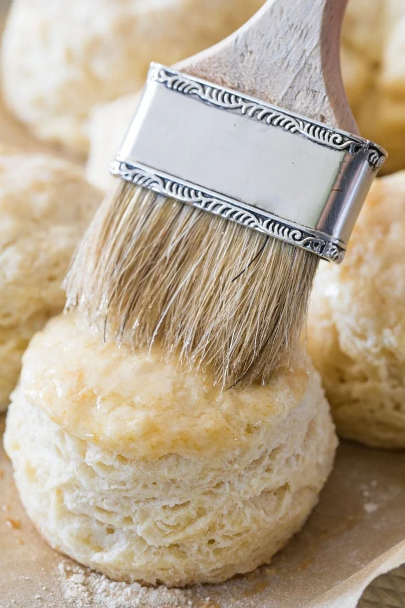

Mom's Biscuits

Fluffy Biscuits
Mom's biscuits are quick and easy to make. They are fluffy delicious
and filling. They are perfect for anything from breakfast sandwiches to
sausage gravy and biscuits.
Ingredients
- 4 Cups Flour
- 1 TB sugar
- 1-2 TB baking powder (2 for more fluff)
- 1 tsp salt
- 1 stick of butter
- 1.5 cups milk, buttermilk, or kefir
Directions
- Mix all the dry Ingredients.
- Squish in the butter until the mixture has the same texture throughout. Crumbly.
- Now mix in the wet ingredient.
- Mix only just enough to incorporate al lthe ingredients together.
- Turn out onto a floured surface.
- Roll into a large flat rectangle.
- Fold each side to center. Now roll it back into a ball.
- Flatten. Roll flat with a rolling pin into a rectangle. This rectangle will
become 3x4 biscuits. Make it the thickness that you want your biscuits to be,
they will rise more in the oven. Cut the rectangle in a 3x4 pattern.
- Place biscuits onto greased sheet pan.
- Brush the tops of the biscuits with milk
- Bake at 400 degrees for 20 minutes.
- Allow to cool and enjoy.